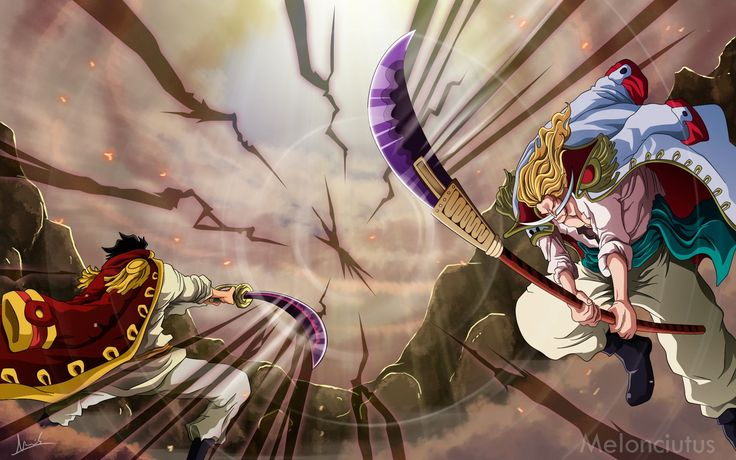
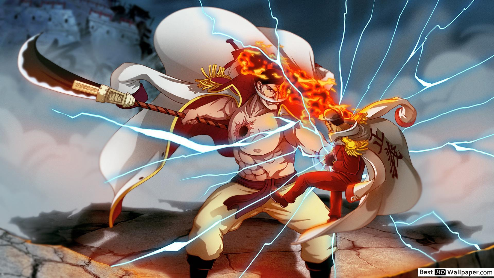

EDWARD NEWGATE: O BARBA BRANCA

Edward Newgate mais conhecido como o Barba branca, é um dos quatro imperadores do mar e recebeu o título de “Homem mais forte do mundo” por conta de seu estilo de vida resiliente e seus princípios como honra e por tratar os membros de sua tripulação como sua família, por ser alguém que luta por quem ama até o final, mesmo estando velho e doente. Portador da Gura Gura No Mi, a fruta que dá ao usuário poder de criar terremotos devastadores.

Nasceu e cresceu na ilha de Sphinx como um órfão miserável.Seu maior desejo era ter uma família.Após sair de Sphinx ele se juntou ao pirata Rocks.D.Xebec, e assim navegou por 8 anos.No entanto após a queda de Rocks ele fundou sua própria tripulação e acolheu em seu navio órfãos e desamparados.Navegou novamente pelos mares, passou a ser chamado de Barba Branca e foi um dos poucos seres poderosos o suficiente para rivalizar com Gol.D.Roger, o Rei Dos Piratas.

Mais tarde foi um dos 4 piratas que ganharam o título de Yonkou(imperador do mar).Por fim, morreu em pé heroicamente, em uma batalha para libertar seu filho Ace antes que fosse executado pela marinha na ilha de Marineford pelas mãos do almirante Akainu junto ao seu filho que morreu após confrontar Akainu por vingança.Ele pode não conseguir salvar o seu filho, mas reviveu a esperança nos mares para os piratas que cobiçavam o One Piece, o lendário tesouro deixado por Gol.D.Roger. Em seus momentos finais ele declara: “O One Piece Existe!!!!”